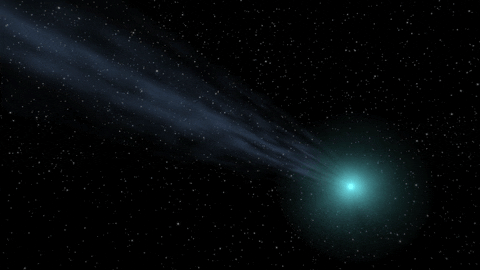

Wat is een Comeet?

Het korte antwoord:
Kometen zijn grote objecten gemaakt van stof en ijs die in een baan om de zon draaien.
Deze oude objecten, vooral bekend om hun lange, stromende staarten,
zijn overblijfselen van de vorming van het zonnestelsel 4,6 miljard jaar geleden.
Wat brengt kometen in de buurt van de aarde zodat we ze kunnen zien?
De zwaartekracht van een planeet of ster kan kometen uit hun huizen in de Kuipergordel of Oortwolk trekken.
Deze sleepboot kan een komeet omleiden naar de zon. De paden van deze omgeleide kometen zien eruit als lange,
uitgerekte ovalen.
Naarmate de komeet steeds sneller naar de zon wordt getrokken,
zwaait hij achter de zon en gaat dan terug naar waar hij vandaan kwam.
Sommige kometen duiken recht de zon in en worden nooit meer gezien.
Wanneer de komeet zich in het binnenste zonnestelsel bevindt,
of hij nu komt of gaat, dan kunnen we hem aan onze hemel zien.